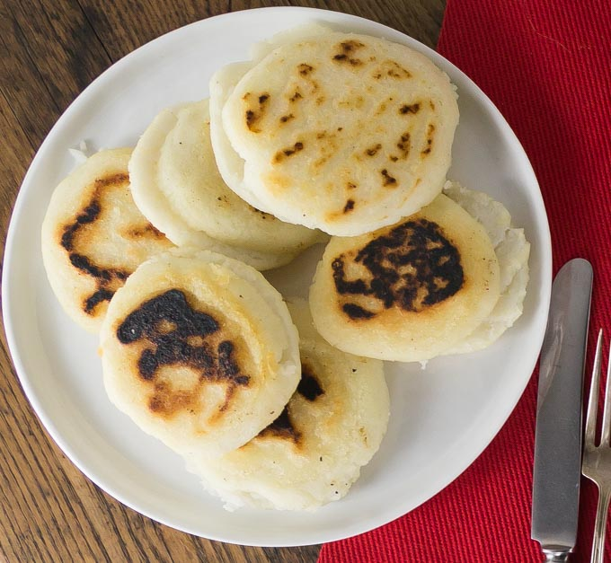

Homemade Arepas

Arepas are fried cornmeal pockets stuffed with all the fillings you could ever want, like carnitas, spicy chicken, sweet potatoes, black beans, sauces, and more.
Ingredients
- 2 and a half cups of lukewarm water
- 1 teaspoon of salt
- 2 cups of pre-cooled white cornmeal
- 1/4 cup of vegetable oil, or as needed
Steps
- Stir water and salt together in a medium bowl; gradually stir in cornmeal with your fingers until the mixture forms a soft, moist, malleable dough.
- Form dough into eight 2-inch diameter balls; pat each ball to flatten into a 3/8-inch-thick arepa patty.
- Heat oil in a large skillet over medium heat; fry arepas in batches until golden brown, about 4 to 5 minutes per side. Transfer cooked arepas to a paper towel-lined plate to drain until cool enough to handle.
- Slice halfway through each arepa horizontally with a thin serrated knife to form a pita-like pocket.
- Enjoy!